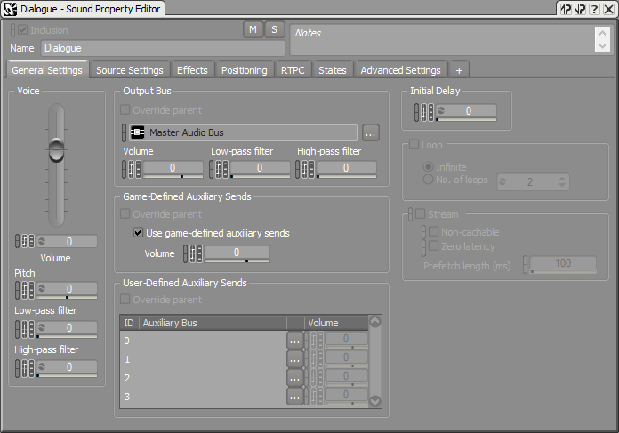
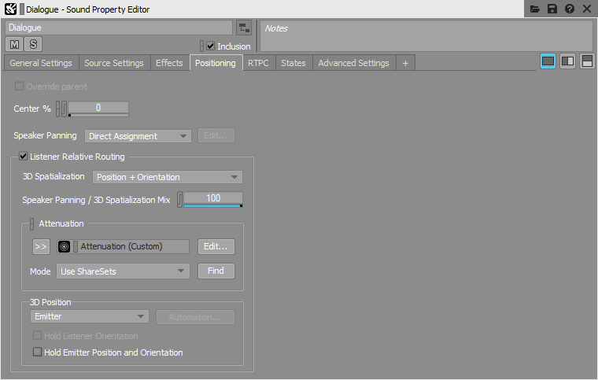
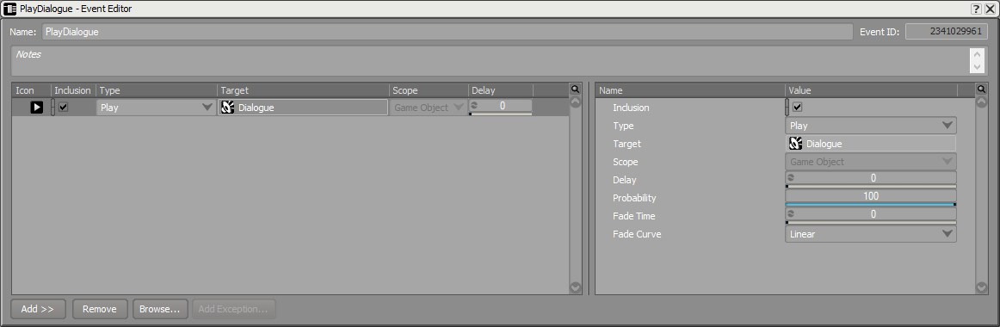
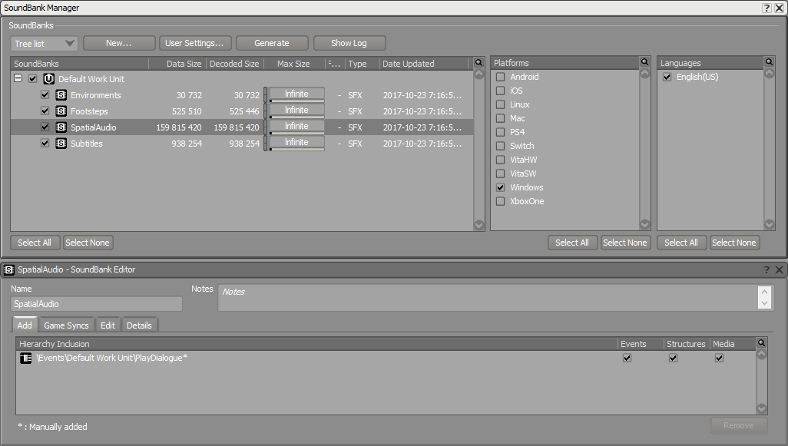
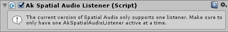
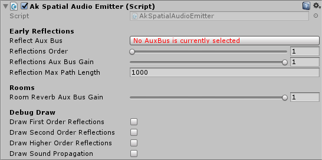
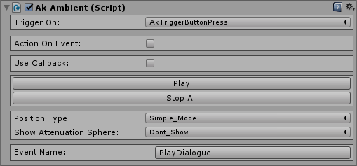
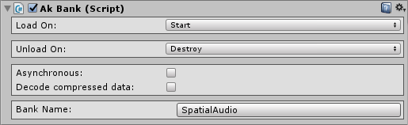
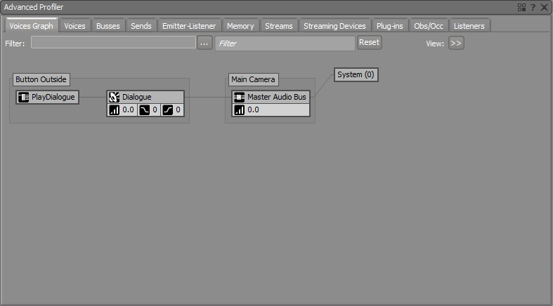
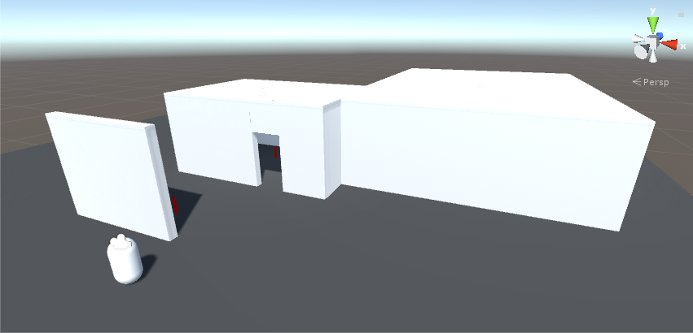

Preparation for the Spatial Audio Tutorials
The following steps must be followed beforehand to successfully complete the Surface Reflectors Tutorial and the Rooms and Portals Tutorial :
1. Create a Unity Project
Using the latest version of Wwise and Unity, follow the steps below in order to build your working environment.
- Launch Unity and create a new project.
- Close Unity.
- Start the Wwise Launcher and integrate Wwise into your Unity project.
2. Wwise Project Preparation
For the tutorials, you will need a Sound SFX, an Event to play it, and a SoundBank.
- From the Launcher, open your project in Wwise.
- Add a Sound SFX under the Actor Mixer Hierarchy's Default Work Unit. In the integration Wwise Project, we added a dialogue.
- Import a sound into it.
- In the Sound Property Editor's
- General Settings tab, enable Use game-defined auxiliary sends.
Sound Property Editor General Settings tab
- Positioning tab, enable Listener Relative Routing and select Position + Orientation for the 3D Spatialization. Optionally, add an Attenuation.
Sound Property Editor Positioning tab
- General Settings tab, enable Use game-defined auxiliary sends.
- Right-click on the Sound SFX within the Actor-Mixer Hierarchy, then select New Event > Play.
Event Editor
- Go to the SoundBank layout (shortcut F7) and add a new SoundBank. Drag the Event into the new SoundBank. Here's how the SoundBank Manager should look in the integration Wwise Project:
SoundBank Manager and Editor
- Save your project.
3. Unity Project Preparation
In this section we will create our game area and the objects in it. We will need a listener, emitters, and two rooms. From the Launcher, open your project in Unity. Open the Wwise Picker (Windows > Wwise Picker), Refresh Project, and Generate SoundBanks.

Wwise Picker
3.A. 环境
- Create a floor, walls, and ceilings using cubes: GameObject > 3D Object > Cube.
Object Name Position Rotation Scale Floor (0, 0, 0) (0, 0, 0) (50, 0.5, 50) Wall Front Left (-4.5, 3, -10) (0, 0, 0) (7, 6, 0.5) Wall Front Middle (0, 5, -10) (0, 0, 0) (2, 2, 0.5) Wall Front Right (2.5, 3, -10) (0, 0, 0) (3, 6, 0.5) Wall Left Small (-7.75, 3, -6) (0, 0, 0) (0.5, 6, 8) Wall Back Small (-2, 3, -2) (0, 0, 0) (12, 6, 0.5) Ceiling Small (-2, 5.75, -6) (0, 0, 0) (12, 0.5, 8) Wall Right Small (3.75, 3, -8) (0, 0, 0) (0.5, 6, 3.5) Wall Front Large (11.5, 3, -7.5) (0, 0, 0) (16, 6, 0.5) Wall Right Large (19.25, 3, 3.25) (0, 0, 0) (0.5, 6, 21.5) Wall Middle (3.75, 5, -4.5) (0, 0, 0) (0.5, 2, 3.5) Wall Left Large (3.75, 3, 5.625) (0, 0, 0) (0.5, 6, 16.75) Wall Back Large (11.5, 3, 14) (0, 0, 0) (16, 6, 0.5) Ceiling Large (11.5, 5.75, 3.25) (0, 0, 0) (16, 0.5, 22) Barrier (-4.5, 3, -17) (0, 0, 0) (7, 6, 0.5) - Add spotlights inside rooms ( GameObject > Light > Spotlight ).
Object Name Position Rotation Scale Spotlight Small Room (-3, 5.75, -6) (0, 0, 0) (1, 1, 1) Spotlight Large Room (11.5, 5.75, 5) (0, 0, 0) (1, 1, 1) - In the Light component, change:
- Range to 30.
- Spot Angle to 179.
- In the Light component, change:
3.B. Character Listener
- Create a character with the method of your choice.
Object Name Position Rotation Scale MainCharacter (0, 1.3, -20) (0, 0, 0) (1, 1, 1) - Remove any Unity Audio Source.
- Add an Ak Audio Listener component to the camera.

Ak Audio Listener component
- Add an Ak Spatial Audio Listener component to the camera.
Ak Spatial Audio Listener component
3.C. Third-Person Emitters
- Create buttons using cylinders ( GameObject > 3D Object > Cylinder ).
Object Name Position Rotation Scale Button Outside (-3, 0.75, -15) (0, 0, 0) (0.15, 0.5, 0.15) Button Small Room (-3, 0.75, -5) (0, 0, 0) (0.15, 0.5, 0.15) Button Large Room (7.5, 0.75, 5) (0, 0, 0) (0.15, 0.5, 0.15) - Add an Ak Spatial Audio Emitter component. 
Ak Spatial Audio Emitter component
- In the Ak Game Obj component:
- Enable the Environment Aware option.
- Enable the Use Default Listener option.

Ak Game Obj component
- Add an Ak Ambient component:
- Choose your preferred way to start the sound in Trigger On.
- Choose the Play_sound Event in Event Name. 
Ak Ambient component
- Add an Ak Bank component:
- Add the SoundBank created in 2. Wwise Project Preparation to Bank Name. 
Ak Bank component
- Add the SoundBank created in 2. Wwise Project Preparation to Bank Name.
- Start the game, connect it to Wwise, and open the Profiler layout (shortcut F6).
- Play the sound from a button. You should hear the sound you imported in the Wwise project.
- In the Voices Graph tab, you should see the following graph. 
Button Outside Voice Graph with no Effect
3.D. Scene
- Save your Scene to a convenient place.
- The final look of the scene is shown in the following image. This scene is available with the Unity integration package. Colors were added to elements of the scene for convenience. A mobile first-person controller was also added. 
Tutorial Unity Scene